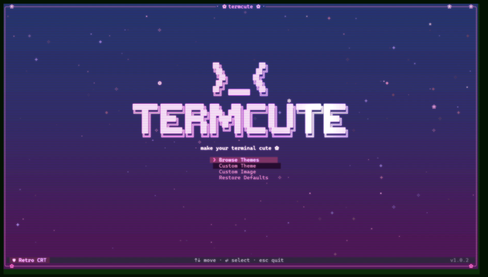
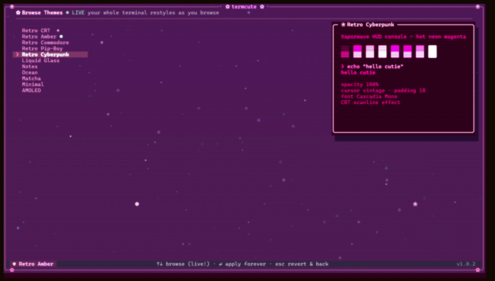
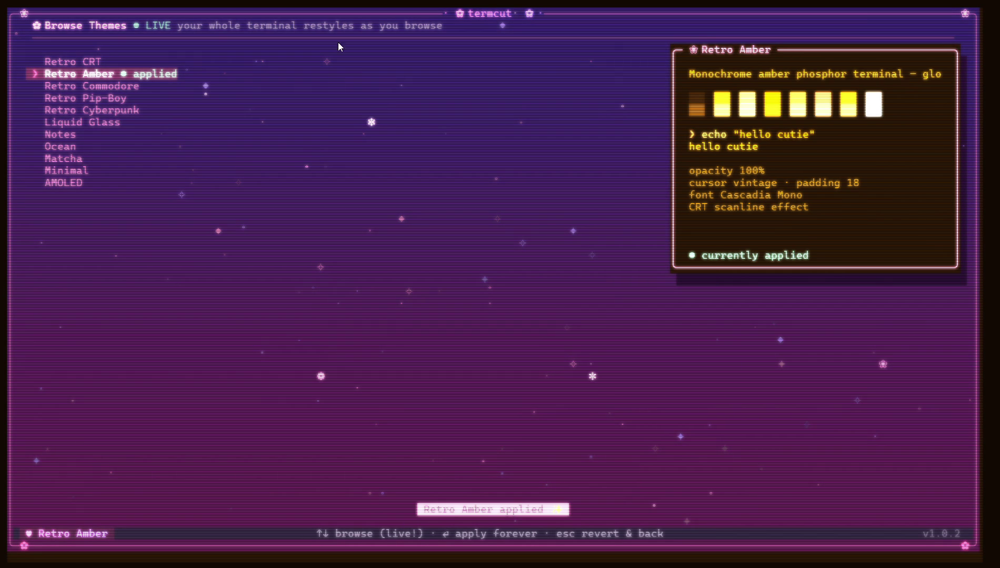
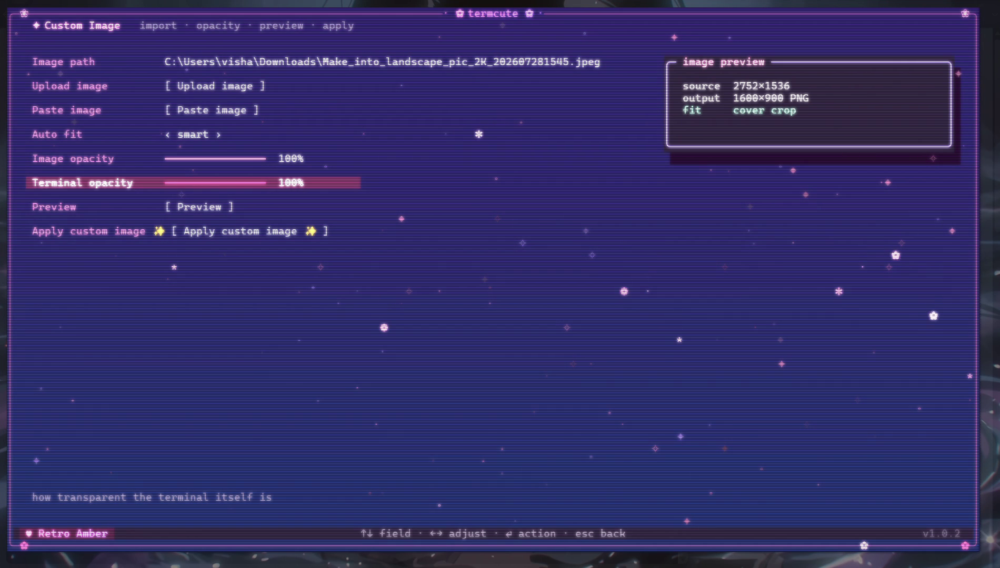
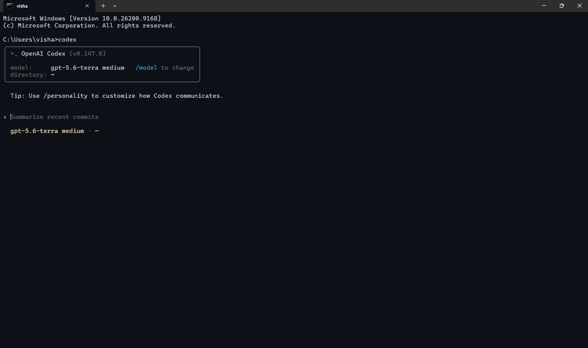
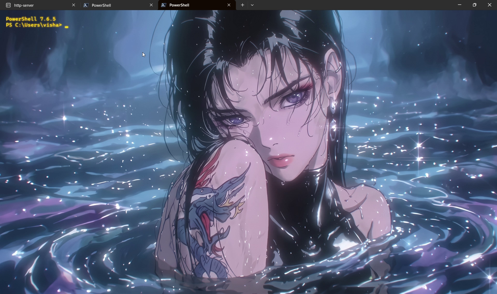

>_<
An animated CLI that themes Windows Terminal in real time with safe backups.
Interactive CLI
Type termcute to launch a lightweight keyboard-driven interface.




Transformation
From a sterile, black window to an expressive, aesthetic workspace.


Themes
Arrow through them in the animated picker. Your terminal transforms in real-time.
CLI
Run termcute for the animated picker, or use subcommands for scripted use.
termcute # animated picker termcute list # list built-in themes termcute apply <slug> # apply a theme permanently termcute custom-image <path> # normalize and apply image termcute custom-image --clipboard # paste from clipboard termcute restore # restore original settings